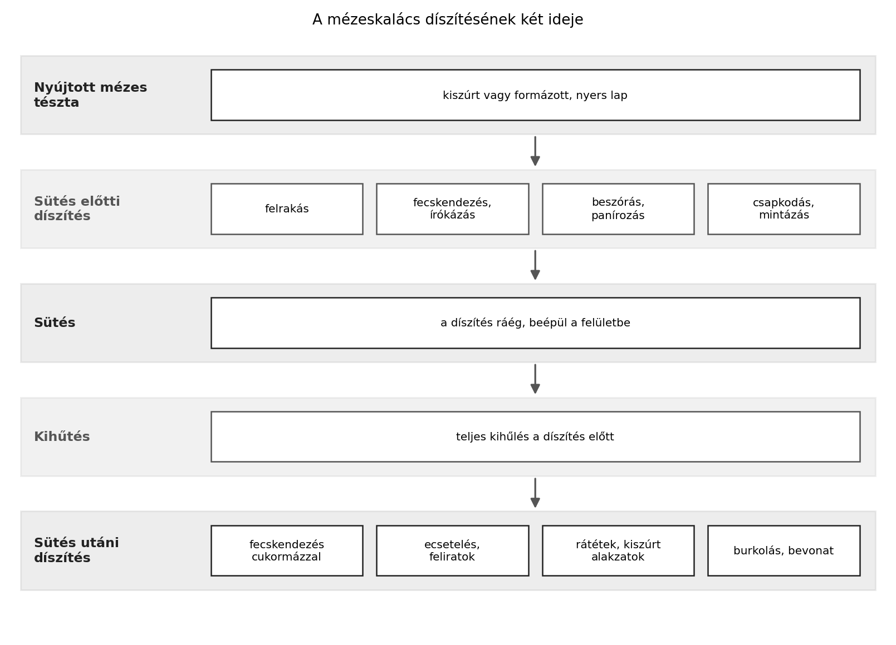

A mézeskalács akkor válik igazán mézeskaláccsá, amikor a sima barna tésztalapból mintás, feliratos, ünnepi termék lesz. A díszítés nemcsak esztétikai kérdés: a felrakott mandula, a rányomott minta vagy a fecskendezett cukormáz a termék felismerhetőségét, a vásárló döntését és sokszor a termék nevét is meghatározza. A pékségben és a mézeskalácsos műhelyben ezért a díszítést ugyanolyan technológiai műveletként kell kezelni, mint a gyúrást, a pihentetést vagy a sütést. Aki itt hibázik – például túl híg cukormázzal írókázik, vagy nem hagyja a fecskendezett mintát megszáradni –, az a késztermék megjelenését, eltarthatóságát és a csomagolhatóságát is rontja.
Ebben az alfejezetben a sütés előtti és a sütés utáni díszítést, az írókázást, a színezékeket és a hagyományos magyar mézeskalács-mintákat tanuljuk meg. A hangsúlyt a gyakorlati kivitelezésre, a díszítőanyagok biztonságos kezelésére és a minták megtervezésére helyezzük, mert ezeket a műveleteket a vizsgán és a munkahelyen is önállóan kell tudni elvégezni.
A mézeskalács díszítését két nagy csoportra osztjuk aszerint, hogy a tésztalap sütése előtt vagy után végezzük:

A sütés előtti díszítés a tésztával együtt sül meg, ezért beépül a felületbe; a sütés utáni díszítés a kész, kihűlt terméken marad látható bevonatként vagy rátétként. A két csoport anyagai és hibái is eltérnek, ezért külön tárgyaljuk őket. Az ábra szintjei a munkasort mutatják: a második és az ötödik szinten felsorolt műveletek nem egymás utáni lépések, hanem választható díszítési módok; a sütés és a teljes kihűlés viszont mindig közéjük kerül.
A sütés előtti díszítést a nyújtott, kiszúrt vagy formára szaggatott, de még meg nem sült tésztalapokon végezzük. Célja, hogy a díszítés a sütés közben ráégjen a termékre, és ne essen le a hűlés vagy a csomagolás során.
Definíció. A felrakás sütés előtti díszítő művelet, amelyben a tésztalap felületére más anyagot – leggyakrabban hámozott mandulát, diót vagy mogyorót – nyomunk vagy ragasztunk, mielőtt a terméket a sütőbe tennénk.
Szabály. A felrakott anyagot enyhén nedvesített felületre, például vízzel vagy tojásos kenéssel megkent tésztára nyomjuk, hogy sütés közben ne csússzon le. A felrakásra szánt magokat szobahőmérsékleten, szárazon, idegen anyagoktól megtisztítva kell előkészíteni.
Gyakorlat. A hagyományos mézeskalács-figurák szemét gyakran mandulából vagy mazsolából készítjük. A tésztalapra enyhe tojásfehérjét kenünk, majd a mandulát hegyes, ovális felével lefelé rányomjuk. A sütés során a tészta megdagad, a mandula kissé megsül, és beleragad a felületbe.
Higiénia. A tojásos kenéshez használt ecsetet vagy a kézzel végzett felrakást csak tiszta eszközzel, megmosott kézzel végezzük; a tojástárolást és a tojástartalmú kenőanyag hűtését a Tojás és tojástermékek alfejezet szerint kell kezelni.
Allergén. A felrakott mandula, dió vagy mogyoró dióféléket tartalmazó allergén. Ha a termék neve vagy jelölése nem utal rá, akkor is fel kell tüntetni az összetevők között, mert az 1169/2011/EU rendelet szerint a diófélék allergén összetevők (ellenőrizendő: az allergénekre vonatkozó hatályos jelölési előírás).
Definíció. A sütés előtti fecskendezés olyan díszítő művelet, amelyben sűrű, folyékony vagy kenhető díszítőanyagot – például tojásos kakaós masszát, cukros tojásfehérjét, sűrű cukormázat vagy étkezési keményítővel sűrített, színezett masszát – juttatunk a nyers tésztalapra, vékony vonalakban vagy pontokban.
A cél az, hogy a minta a sütés után kissé megdermedjen, de ne folyjon szét, és ne égjen meg. Ezért a sütés előtti fecskendezésnél a masszát sűrűbbre kell készíteni, mint a sütés utáni írókázásnál.
Példa. Egy karácsonyi mézeskalács-szíven a mintát sűrű tojásfehérjés cukormázzal, habzsákból vékony csővel fecskendezzük fel. A massza 1 kg átszitált porcukorra kb. 1–2 tojásfehérjét és néhány csepp citromlevet tartalmazhat; a mennyiség attól függ, hogy milyen a fehérje és a porcukor nedvességtartalma (ellenőrizendő: üzemi receptúra). A masszát addig keverjük, amíg fényes, sima, de jól formázható nem lesz. A kész tésztalapot sütés előtt 10–20 percig szikkadni hagyjuk, majd felfecskendezzük a mintát.
Technológia. A sütés előtti fecskendezés akkor sikeres, ha a minta vonala nem folyik szét, és a sütés után világos vagy enyhén aranyszínű, de nem égett. A sütő hőmérsékletét ezért általában alacsonyabban kell tartani, mint a sima tésztalapnál: a cukormázzal díszített termék érzékenyebb a pirulásra. A konkrét hőmérséklet és idő a tészta vastagságától, a cukormáz összetételétől és a kemencétől függ; használjuk az üzemi technológiai lapot (ellenőrizendő: üzemi paraméter).
Definíció. A beszórás sütés előtti díszítő művelet, amelynek során a tésztalap felületét vagy sütőlapját szilárd, száraz anyaggal – mandulaszelettel, darált dióval, mákkal, szezámmaggal, kristálycukorral, vagy sós terméknél durva sóval – szórjuk meg.
A panírozás a beszórás egy fajtája: a tészta felületét először nedvesítjük vagy tojásos kenéssel látjuk el, majd a szilárd anyagba mártjuk vagy arra rászórjuk, és enyhén rányomjuk.
Szabály. A beszórást és panírozást közvetlenül a sütés előtt végezzük, mert ha a megnedvesített tészta túl sokáig áll, a felület feloldódik és ragacsossá válik. A magvak vastag rétegét a termék tömegéhez képest 5–10%-ban érdemes tervezni, de ez termék- és receptúrafüggő (ellenőrizendő: technológiai lap).
HACCP. A magvak és olajos magvak tárolásánál kritikus pont az avasodás és a penészedés. A beszóráshoz csak friss, szag- és kártevőmentes anyagot szabad felhasználni. A fel nem használt magvakat jelzett, fedett edényben, hűvös, száraz helyen tároljuk. A kártevőártalom ellenőrzése a nyersanyag-átvételnél és a raktárban a Nyersanyagok mennyiségi és minőségi átvétele, reklamáció alfejezet szerint történik.
Definíció. A csapkodás sütés előtti díszítő művelet, amelyben a tésztalap felületét – leggyakrabban kesztyűs ujjal, fém- vagy famintázóval, hálós mintázóhengerrel – megnyomogatjuk, behúzzuk vagy megkoptatjuk, hogy a sütés után hullámos, rücskös vagy recés mintázat maradjon rajta.
A művelet neve a hagyományos technikából ered: a mézeskalácsos a tésztát gyakran ujjal vagy tenyerével „csapkodta”, illetve a formázófával mintázta. Ma a mintázóhenger, a derelyevágó és a műanyag mintázótüske is használatos.
Technológia. A csapkodást a tészta pihentetése után, de még a kiszáradása előtt kell elvégezni. A tésztából nyújtsunk egyenletes, pl. 6–8 mm vastag lapot. A mintázóhengert lisztbe vagy keményítőbe mártjuk, hogy ne ragadjon, majd egyenletes nyomással egyszer, határozott mozdulattal ráhengerelünk. A mintázást nem érdemes visszahúzni, mert a tészta elnyíródhat vagy a minta szétkenődik. A csapkodás után a tésztalapot hagyni kell néhány percet pihenni, hogy a bevágások ne húzódjanak össze.
Hiba. Ha a mintázó túl mélyre megy, a sütés után a minta helyén a tészta elrepedhet vagy sötéten, keserűen pirulhat. Ha túl sekély, a minta a sütés közben eltűnik. Az optimális mélység tésztától függően általában 1–3 mm, de ezt próbasütéssel kell beállítani (ellenőrizendő: üzemi gyakorlat).
A sütés utáni díszítést a kihűlt, stabil felületű terméken végezzük. Így a díszítőanyag nem megy át magas hőmérsékleten, ezért olyan anyagokat is használhatunk, amelyek a sütőben megolvadnának, elszíneződnének vagy tönkremennének.
Definíció. Az írókázás sütés utáni díszítő művelet, amelyben cukormázból – porcukor, víz vagy tojásfehérje, esetenként citromlé és színezék felhasználásával készült masszából – vékony vonalakat, feliratokat, körvonalakat és pontokat fecskendezünk a kész mézeskalácsra.
A mézeskalács-díszítés legfontosabb művelete az írókázás, mert ez adja a termék rajzolatát, feliratát és az eltarthatóság szempontjából is védőréteget képezhet.
Receptúra – alap írókázó cukormáz. A mennyiség tanulási példa, kisebb tételhez elegendő:
| Nyersanyag | Mennyiség (g) | Megjegyzés |
|---|---|---|
| Átszitált porcukor | 500 | Szitálás a csomómentességért |
| Pasztőrözött tojásfehérje (vagy tojásfehérje-por, a gyártó utasítása szerint feloldva) | 50–70 | hűtőből közvetlenül felhasználás előtt |
| Citromlé | 5–10 | Savasság és szilárdság |
| Víz | szükség szerint 5–15 | Csak ha hígítás szükséges |
| Összesen | kb. 560–600 |
Megjegyzés. Ez a recept írókázásra szánt, sűrűbb máz (a porcukorra vetítve kb. 10–14 % tojásfehérje, kevés víz), hogy a vonal megtartsa alakját. A Mézes tészták bevonatai alfejezet receptje (kb. 5 % tojásfehérje, 5–7 % víz) lágyabb, sík bevonásra is használható máz; a kettő állaga eltér, ezért a víz nem helyettesíti a fehérje felét.
HACCP. A sütés utáni máz hőkezelés nélkül kerül a fogyasztásra kész termékre, ezért nyers héjas tojás fehérjéje nem használható; csak pasztőrözött tojásfehérje vagy tojásfehérje-por (ellenőrizendő: üzemi HACCP-terv). Ugyanez a szabály a Mézes tészták bevonatai alfejezetben is szerepel.
Allergén. Tojásfehérjét tartalmaz. A tojás allergén, ezért a készterméken jelölni kell (ellenőrizendő: az 1169/2011/EU rendelet szerinti allergénjelölés). Ha tojásfehérje helyett pasztőrözött tojásfehérje-port vagy tojásmentes, víz alapú mázat használunk, azt a termék jelölésében és az allergénkezelésben külön kell követni.
Gyakorlat. A porcukrot egy tálba szitáljuk. Hozzáadjuk a pasztőrözött tojásfehérjét és a citromlevet, majd tiszta spatulával vagy gépi habverővel alacsony fokozaton simára keverjük. A masszát addig keverjük, amíg fényes, csúcsot húzó, de jól folyatható állaga lesz. A kész masszát nejlonzacskóba vagy habzsákba töltjük, a csúcsát 1–2 mm-esre vágjuk, és próbavonalat húzunk sütőpapírra. Ha a vonal megtartja alakját, írókázhatunk. Ha szétterül, kevés porcukrot keverünk hozzá; ha nem folyik egyenletesen, kevés vizet vagy citromlevet adunk hozzá.
Fontos. A fecskendezést nyomás alatt végezzük, ezért a habzsákot vagy zacskót nem szabad az arcunk felé tartani, és a lezárást ellenőrizni kell. Az írókázó massza bőrre száradva nehezen oldható, ezért a kézbőrt és a munkafelületet azonnal tisztítsuk.
Az írókázás munkafogásait az alábbi képsor mutatja: a tölcsér elkészítése (1), töltése és a hegy levágása (2), a kéztartás (3), majd az alapelemek: vonal (4), pont és csepp (5), ív és csipke (6). Az alsó mintasor gyakorlásra való.
A leggyakoribb kezdő hiba, hogy a hegyet a felületre nyomjuk és húzzuk: a vonal ilyenkor elvékonyodik, szakad. A 4. kocka szerint a hegy néhány milliméterrel a felület fölött halad, a máz magától fekszik rá. A HTML-kiadásban a képsor lépésenként nagyítható.
Higiénia. Sütés utáni mázhoz nyers tojásfehérje helyett pasztőrözött (folyékony vagy por alakú) tojásfehérjét kell használni, mert az írókázott termék nem kap további hőkezelést (ellenőrizendő: a pékség HACCP-terve, NÉBIH-útmutató).
Tárolás. A tojásfehérjés cukormáz mikrobaérzékeny. Ha nem használjuk fel azonnal, hűtőben, lefedve tároljuk, és a tárolási időt a HACCP-terv szerint korlátozzuk (ellenőrizendő: a pékség HACCP-terve). A hűtőből kivett masszát keverjük át, és ne használjuk, ha szagot, színváltozást vagy habzást észlelünk.
Definíció. Az ecsetelés sütés utáni díszítő művelet, amelyben cukormázt, kakaós vagy színezett mázat, olvasztott bevonót vagy más folyékony díszítőanyagot ecsettel viszünk fel a termék felületére.
Az ecsetelés akkor jó, ha a termék nagyobb felületét egyenletesen akarjuk bevonni, vagy ha nem akarunk színezett masszát fecskendeni. A vékony ecsetet a feliratokhoz, a széles, lapos ecsetet a teljes felület bevonásához használjuk.
Technológia. A máz legyen szobahőmérsékletű és jól kenhető. Az ecsetet, ha tojásfehérjés mázat használunk, használat előtt és után is alaposan el kell mosni, mert a száradó cukormáz az ecset szálait összeragasztja. A felületre egyenletes, vékony réteget hordjunk fel, és hagyjuk a tálcán, rács nélkül, pormentes helyen megszilárdulni.
A feliratok készítése megegyezik az írókázással, de itt a vonalak betűket, évszámokat, neveket vagy rövid üzeneteket alkotnak. A kis betűk 3–5 mm magasak, a nagyobb feliratok 8–12 mm-esek is lehetnek; a méretet a termékfelülethez igazítjuk. A felirathoz szükséges massza legyen kissé sűrűbb, mint a körvonalazáshoz használt massza, hogy a betűk széle ne kenődjön szét.
Definíció. A rátét olyan sütés utáni díszítőelem, amelyet külön készítünk el – például kiszúrt mézeskalács-figura, szárított cukormáz-virág, cukorgyöngy, vonalazott cukordísz, csokoládé- vagy cukormassza-lap –, majd ehető ragasztóval vagy friss cukormázzal rögzítünk a termékre.
Technológia. A kiszúrt alakzatot készíthetjük ugyanabból a tésztából, mint az alaplapot, de készíthetjük más színű vagy más ízű masszából is. A rátétet előbb meg kell sütni és kihűteni. A rátét rögzítéséhez kevés friss cukormázat használunk: a rátét hátoldalára vagy az alaplapra pontszerűen felvisszük, majd a rátétet óvatosan rányomjuk. A rögzítés után a terméket legalább 30–60 percig szikkadni hagyjuk (ellenőrizendő: üzemi gyakorlat).
Allergén. Ha a rátét más összetevőt tartalmaz, mint az alaplap, az allergénkockázatot újra kell értékelni. Például mandulás rátét kerül diómentes alaplapra, akkor a termék dióféléket fog tartalmazni. Az allergéneket a teljes késztermékre kell megadni.
Definíció. A burkolás sütés utáni díszítő művelet, amelyben a mézeskalácsot – gyakran házikót vagy figurát – nagyobb, vékony, formázott díszítőréteggel vonják be, vagy építőelemként más tésztalapokkal, cukormáz-ragasztással fedik, illesztik.
A mézeskalácsházaknál a burkolás részben építési művelet: a ház oldalait és tetejét cukormázzal ragasztjuk össze, majd a felületeket hó- vagy cserépmintával burkoljuk, illetve cukormáz-hóval vonjuk be. A burkolás mindig a ház stabil összeállítása után történik, mert a tészta terhelésre eltörhet.
Gyakorlat. A ház oldallapjait vastagabb írókázó mázzal vagy ún. ragasztó-mázzal illesztjük össze, és megtámasztjuk, amíg a kötés megszilárdul. Utána a tetőre sűrűbb mázból húzott cseppekkel „hófúvást” fecskendezünk. A burkolathoz használt máz lehet fehér vagy pasztellszínű, de ízesítőként ne használjunk olyan anyagot, amely a tárolás alatt eláztatja a tésztát (pl. nagy mennyiségű friss gyümölcspép).
A mézeskalács díszítéséhez használt színezékek élelmiszer-adalékanyagok vagy színező élelmiszerek lehetnek. Az élelmiszer-színezékekre az 1333/2008/EK rendelet vonatkozik (ellenőrizendő: a hatályos adalékanyag-rendelet, a felhasználható színezékek és maximális mennyiségek).
Szabály. Csak olyan színezéket használjunk, amelynek jelölése élelmiszeripari felhasználásra engedélyezett, és a termékre vonatkozó előírt jelölés szerint feltüntettük. A kézműves, festékboltban kapható vagy ipari színezékek tilosak. A színezéket a gyártói utasítás szerint, kis adagokban keverjük a masszához, mert a szín a száradás után mélyülhet vagy halványulhat.
Előírás. Az élelmiszer-színezékeket az összetevők között a megfelelő névvel vagy E-számmal kell feltüntetni. Egyes színezékek – például az azofestékek – a fogyasztói tájékoztatásban külön figyelmeztetést igényelhetnek (ellenőrizendő: az 1333/2008/EK rendelet szerinti jelölési kötelezettség). A „természetes színezék” megnevezés nem azt jelenti, hogy az anyag nem adalékanyag, és nem automatikusan allergénmentes.
Példa. Piros színt adhat céklakivonat, sárgát kurkuma vagy sáfrányos szeklice, zöldet spenót- vagy csalánkivonat, barnát kakaópor vagy égetett cukor. A színezék hozzáadása előtt készítsünk próbamintát, mert a tészta sárgásbarna alapszíne megváltoztatja a végső árnyalatot. A színkeverést felírjuk a gyártási naplóba, hogy a következő tételnél reprodukálható legyen.
HACCP. A színezéket élelmiszertől elkülönítve, zárt, jelzett edényben tároljuk. A mérőeszközt a színezékhez és a mázhoz is tisztán tartjuk, hogy ne szennyezzük a fehér masszát. A színezéket tartalmazó masszát ugyanolyan hűtési és felhasználási idővel kezeljük, mint a fehér alapmasszát.
A magyar mézeskalács mintakincse évszázados hagyomány, és sok eleme ma is használatos. A mintákat három csoportba sorolhatjuk: a népi, a polgári és az ünnepi motívumok.
Definíció. A hagyományos mézeskalács-minta a termék felületére faragott, nyomott vagy írókázott, ismétlődő vagy egyszeri rajzolat, amelynek díszítő és jelölő szerepe van. A minta lehet állatalakos, növényi, emberi, szakrális vagy geometrikus.
Példa – mintakészlet. A leggyakoribb motívumok:
A hagyományos mintákhoz faragott mézeskalácsformákat használtak; ma a mintát írókázva, sablonnal, kiszúróval vagy formanyomóval is elkészíthetjük. A sablonos minta gyors, az írókázott minta egyedi, a faragott forma pedig a legősibb, de ma már gyakran sablon vagy kiszúró helyettesíti.
Az alábbi mintalap a mintakészlet néhány jellegzetes darabját mutatja: a tükrös szívet (1, középen kis tükörrel, írókázott kerettel), a huszárt (2), a faformából kivert, domború bábot (3) és az írókázott csillagot (4); alul a gyakori növényi és geometrikus díszítőelemek láthatók.
Figyelem. A tükrös szív hagyományos dísztárgy: az üvegtükör idegen anyag (üvegszilánk-veszély), ezért fogyasztásra szánt termékbe nem építünk üveget; ha mégis készül, a terméket dísztárgyként, „nem fogyasztásra” jelöléssel, az élelmiszer-gyártástól elkülönítve kell kezelni (ellenőrizendő: jelölési előírás, HACCP-terv). Élelmiszerhez ehető „tükör” (pl. izomaltból vagy zselatinból) használható.
A HTML-kiadásban a mintákra mutatva megjelenik a nevük és a készítési módjuk (faragott, nyomott vagy írókázott).
Tervezés. A hagyományos mintát úgy tervezzük, hogy a termék formája és a minta összekapcsolódjon. A szív alakú tésztára szívbe írt virág, a huszárra egyenruha-vonalak, a házikóra cserép- és ablakminta kerüljön. A minta ne takarja el a termék formáját, és ne legyen annyira sűrű, hogy a cukormáz száradás előtt összefolyjon.
Gyakorlat. Rajzoljunk először papírra egy sablont, jelöljük be a fő vonalakat, majd a tésztalapra vagy a kihűlt termékre élelmiszeripari jelölőtollal (ehető tinta) vagy tűvel, fogpiszkálóval halványan karcoljuk fel a mintát; közönséges ceruzát az élelmiszeren nem használunk. Az írókázásnál a minta kontúrjával kezdünk, majd a belső díszítő elemeket fecskendezzük. Ha színes mintát készítünk, előbb a világos, majd a sötét színekkel dolgozunk, és a világos réteget hagyjuk megszilárdulni.
Az alábbi technológiai lap egy tanulási példa. A mennyiségek és paraméterek termék-, üzem- és alapanyagfüggőek; kiadás előtt az üzemi technológiai lap szerint ellenőrizendő.
| Jellemző | Érték |
|---|---|
| Termék | Írókázott mézeskalács-szív |
| Késztermék tömege | 80–100 g/db |
| Darabszám | 20 db |
| Késztészta | 2,10 kg |
| Feladási tömeg | 100 g/db (10% veszteség mellett kb. 90 g késztömeg, tanulási példa); 20 db + széltészta |
| Nyersanyag | Lisztre vetített % | Mennyiség (kg) | Megjegyzés |
|---|---|---|---|
| Búzaliszt | 100 | 1,00 | Finomliszt |
| Méz | 45 | 0,45 | 30–35 °C |
| Cukor | 30 | 0,30 | Kristálycukor |
| Tojás | 15 | 0,15 | Egész tojás |
| Vaj/margarin | 10 | 0,10 | Szobahőmérsékletű |
| Víz vagy tej | 8 | 0,08 | Sűrűbb tésztához |
| Szalalkáli (ammónium-hidrogén-karbonát) | 0,8 | 0,008 | Vízben oldva, a gyártói adagolás szerint (tanulási példa, ellenőrizendő: gyártmánylap) |
| Szegfűszeg, fahéj | 1,5 | 0,015 | Őrölt |
| Összesen (tészta) | 210,3 | 2,10 | A tételek összege; az írókázó mázat külön számoljuk (0,30 kg: porcukor, pasztőrözött tojásfehérje, citromlé) |
| Paraméter | Érték |
|---|---|
| Állásidő | 24–48 h, hideg helyen |
| Nyújtás vastagsága | 6–8 mm |
| Sütés előtti szikkasztás | 10–20 perc |
| Sütés hőmérséklete | 170–190 °C |
| Sütés ideje | 8–12 perc |
| Hűtés | Rácson, szobahőmérsékletűre |
| Írókázás | Kihűlt terméken, 1–2 mm-es csővel (finom vonalhoz 0,5–1 mm) |
Tojás (tészta, máz), glutén (búzaliszt), tej (vaj, ha tejjel készül). A máz tojásfehérjét tartalmaz. Ha a termék más allergént is kap (pl. mandula), azt a teljes termékre kell jelölni. A keresztszennyeződést a közös eszközök (habzsák, ecset, keverőtál) használata miatt külön kell kezelni; az adott allergént nem tartalmazó termék gyártása előtt eszköztisztítás és sorrendtervezés szükséges.
| Pont | Veszély | Határ/monitoring | Helyesbítés |
|---|---|---|---|
| Tojásfehérjés máz | Mikrobaszaporodás, Salmonella | Csak pasztőrözött fehérje vagy fehérjepor; hűtve tárolás, felhasználási idő; érzékszervi ellenőrzés | Kidobás, eszközfertőtlenítés |
| Sütés | Nem átsült tészta | Maghőmérséklet és szín (ellenőrizendő: üzemi HACCP) | Továbbsütés, selejt |
| Írókázás | Túl híg massza, szétfolyó minta | Állagpróba, vonalpróba | Porcukor hozzáadása |
| Csomagolás | Törés, sérülés | Felület- és épségellenőrzés | Sérült termék kiválogatása |
Megjegyzés. A táblázat tanulási példa; a mézeskalács-tészta szalalkáli adagja a gyártói utasítás szerint változhat, és a felhasználhatósági korlátok ellenőrizendők. A szalalkáli nem szódabikarbóna és nem sütőpor; csak a receptúrában megadott tisztaságú anyagot használjunk.
Cél. A tanuló elkészíti az írókázó cukormázat, és gyakorolja a vonalas fecskendezést, valamint megtervezi egy hagyományos szív-minta vonalait.
Eszközök és anyagok: szitáló, mérleg, keverőtál, spatula, habzsák kisméretű csővel vagy erős nejlonzacskó, sütőpapír, kihűlt mézeskalács-lapok, porcukor, pasztőrözött tojásfehérje, citromlé, konyhai hőmérő, nedves konyharuha, ételfesték (opcionális).
Higiénia. Tiszta munkaruha, hajháló vagy sapka, ékszer nélkül. Kézmosás, rövid tiszta köröm, a kézfejen lévő sebek vízzáró kötéssel. A munkafelület, a keverőtál és a habzsák tiszta, száraz legyen. Fertőző betegség esetén a tanuló nem dolgozhat élelmiszerrel.
Gépbiztonság. Ha gépi habverőt vagy gépi keverőt használunk, csak a betanított, jó állapotú gépet, a védőburkolatot lezárva. A habverőt csak leállított, áramtalanított gépnél tisztítjuk. A sérült gépet ne használjuk, jelezzük.
Lépések:
Ellenőrzési pontok: a máz fénye, csúcstartása, a vonal egyenletessége, a vonalak szétfolyása, a máz színe, a termék felületének sérülése.
Tipikus hibák:
Dokumentálás. A gyakorlóüzemi naplóba rögzítsük a máz összetételét, a felhasznált mennyiséget, a késztermék számát, a megfigyelt hibákat és azok javítását. Ha a terméket értékesítjük, a HACCP dokumentációhoz a tojásfehérje hűtési idejét és a máz felhasználhatóságát is jegyezzük fel.
A díszített mézeskalács minőségét először érzékszervi úton ellenőrizzük:
A mennyiségi ellenőrzés a tömegméréssel történik: a díszített darab tömege a késztömeg-tűrésen belül maradjon (ellenőrizendő: a termékre vonatkozó tömegtűrés). A díszítőanyag miatt a tömeg enyhén növekedhet, ezért a feladási tömeget már a díszítés súlyával együtt kell tervezni.
| Tünet | Ok | Megelőzés/javítás |
|---|---|---|
| A fecskendezett minta sütés közben sötétre ég | Túl magas sütőhőmérséklet, magas cukortartalmú máz | Csökkentett hőmérséklet, rövidebb sütési idő; próbasütés |
| A sütés utáni máz lepattog a tésztáról | Túl vastag máz, túl hideg vagy zsíros felület, nem kellő száradás | Vékonyabb réteg, zsírmentes felület, lassú szárítás |
| A rátét leesik | Túl kevés ragasztómáz, nem kellő szikkadás | Megfelelő pontokban felvitt máz, 30–60 perc pihentetés |
| A minta eltűnt sütés után | Túl sekély csapkodás, túl lágy tészta | Mélyebb mintázás, tészta kissé szikkadt felületének használata |
| A máz idővel penészes lesz | Nem hűtött tojásfehérje, szennyezett eszköz, hosszú tárolás | HACCP szerinti hűtés, tiszta eszközök, friss máz; penészes termék kidobása |
Figyelem. A penészes mézeskalácsot nem szabad levakarni és újraértékesíteni. A mikotoxinok a tésztába is bejuthatnak; a termék élelmiszer-biztonsági szempontból selejt (ellenőrizendő: a HACCP-eljárás szerinti selejtkezelés).
Válaszok: lásd a Megoldások szakaszban.
1. feladat (A). Sorold fel a sütés előtti díszítő műveleteket, és mindegyiknél írj egy-egy példát.
2. feladat (A). Milyen jellemzőket kell ellenőrizni az írókázó cukormázon a fecskendezés előtt?
3. feladat (B). Mérj ki 300 g porcukrot. Hány gramm tojásfehérjét adsz hozzá, ha a receptúra szerint 100 g porcukorra 12 g tojásfehérje jut?
4. feladat (B). Egy mézeskalács-szív sütés előtti díszítéséhez 15 g mandulát használunk. A tészta tömegét 80 g-ra tervezzük. Hány százalékkal növeli a mandula a tészta tömegét, és hány gramm lesz a teljes feladási tömeg?
5. feladat (C). A gyakorlatban az írókázott minta sütés után sötétbarna és keserű lett. A sütő hőmérséklete 200 °C volt. Mi lehet az ok, és hogyan javítod a következő tételnél?
6. feladat (D). A tanuló kiszúrt mézeskalácsház-oldalakat készít, és fehér írókázó mázzal szeretné a házat összeragasztani. A máz azonban túl híg, a lapok elcsúsznak. Mit javasolsz? Milyen állagú masszát használj, és mit ellenőrzöl?
Önellenőrzés – válaszok
1. feladat (A). Sütés előtti díszítő műveletek: felrakás (mandula a huszár szeméhez), fecskendezés (tojásfehérjés minta a szívre), beszórás (szezámmag vagy mák a tésztalapra), panírozás (tojásos kenés után mandulába mártott felület), csapkodás (mintázóhengerrel recézett tésztalap).
2. feladat (A). A máz hőmérséklete (kb. 20–25 °C), állaga (csúcsot húz, de folyik), fénye, színe, szaga, valamint a habzsák/cső tisztasága és a próbavonal alakja. Idegen anyag, csomó, levegőbuborék, színelváltozás vagy savanyú szag esetén nem használható.
3. feladat (B).
Adott: 300 g porcukor, 100 g porcukorra 12 g tojásfehérje.
Keresett: tojásfehérje tömege.
Képlet:
Ellenőrzés: 300 g háromszorosa 100 g-nak, így a 12 g háromszorosa 36 g.
∎
4. feladat (B).
Adott: 80 g tészta, 15 g mandula.
Keresett: százalékos növekedés és teljes feladási tömeg.
A növekedés:
A teljes feladási tömeg:
Ellenőrzés: 95 g = 80 g × 1,1875, tehát a 18,75%-os növekedés
visszaszámolható. ∎
5. feladat (C). A sötétbarna, keserű minta oka valószínűleg a túl magas sütési hőmérséklet és/vagy a cukormáz magas cukortartalma, amely 200 °C-on karamellizálódik, majd ég. A sütés előtti fecskendezett mintánál a sütő hőmérsékletét 10–20 °C-kal lejjebb vesszük, a sütési időt kissé rövidítjük, és a terméket a sütő középső zónájában sütjük. Próbasütést végzünk, és a minta színét az első 5 perc után ellenőrizzük.
6. feladat (D). A híg máz nem alkalmas ragasztásra, mert a lapok elcsúsznak, és a máz kifolyik az illesztésből. Használjunk sűrűbb, ún. ragasztó-mázat: kevesebb tojásfehérjét vagy vizet, és több porcukrot úgy, hogy az a spatuláról éppen csak lecsöpögjön, de a csúcsot megtartsa. A ház oldalainak illesztésénél a mázat vastag vonalban húzzuk, a lapokat 30–60 másodpercig nyomjuk össze, majd oldalról megtámasztjuk, amíg a máz megszilárdul. Ellenőrizzük a lapok egyenességét, a máz szétfolyását és a kötés szilárdságát.
A mézeskalács díszítése sütés előtti és sütés utáni műveletekre oszlik. Sütés előtt felrakást (mandula, dió), fecskendezést (sűrű cukormáz), beszórást/panírozást (mák, szezámmag, magvak) és csapkodást (mintázóhenger, tüske) végzünk. Ezek a tésztával együtt sülnek meg, ezért a hőmérsékletre és a felület előkészítésére különösen ügyelni kell. Sütés után a kihűlt terméken dolgozunk: írókázunk, ecsetelünk, feliratot készítünk, rátétet rögzítünk, vagy a mézeskalácsházat burkoljuk és ragasztjuk. Az írókázó cukormáz alapanyaga átszitált porcukor, tojásfehérje és citromlé; a tojás allergén. A máz állagát mindig próbavonallal ellenőrizzük. Színezékként csak engedélyezett élelmiszer-színezéket használunk, és a jelölési előírásokat betartjuk (ellenőrizendő: 1333/2008/EK rendelet, 1169/2011/EU rendelet). A hagyományos magyar minták – szív, virág, huszár, bölcső, állatalak – tervezésénél a forma és a minta egységét tartjuk szem előtt, először papírsablont rajzolunk, majd a világos színektől a sötétek felé haladunk. Az alfejezet eredményeit a mézeskalács-figurák (ház, báb, szív, huszár) készítésekor használjuk tovább, különösen a cukormázas rögzítés és a hagyományos mintakincs terén. ∎